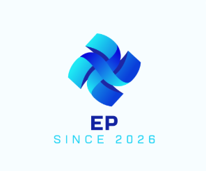

Creating Clarity
Simplifying complexity through organized systems, thoughtful planning, and clear communication.

ERICKA C PARKERWelcome. I’m glad you’re here.
Executive Brand Portfolio
I bring order to complexity through thoughtful executive partnership, operational leadership, and a genuine commitment to helping people succeed.

My Philosophy
I believe exceptional organizations thrive when people feel supported, processes are clear, and leaders have the structure they need to focus on what matters most.
Whether I am partnering with executives, improving operations, supporting HR initiatives, or coordinating complex programs, my goal is consistent: create clarity, strengthen trust, and leave the organization stronger than I found it.
“The best solutions begin with listening, grow through collaboration, and succeed through thoughtful execution.”
How I Create Impact
Simplifying complexity through organized systems, thoughtful planning, and clear communication.
Developing dependable partnerships through consistency, empathy, discretion, and follow-through.
Turning priorities into progress through strategic execution, accountability, and continuous improvement.
Core Strengths in Motion
Capabilities that work together to create meaningful results.
Selected Success Story
A complex academic healthcare environment required seamless coordination across executive leadership, faculty, HR, finance, and operational teams. Priorities shifted quickly, and success depended on reliable communication, consistent processes, and strong operational follow-through.
Over an 11-year career chapter at MD Anderson Cancer Center, I focused on anticipating needs, strengthening communication, documenting repeatable processes, and creating systems that improved visibility and helped teams work more effectively together.
Operational excellence is not created through busyness. It is created through thoughtful systems, trusted relationships, and a commitment to helping people succeed.
What It’s Like to Work With Me
People know they can count on me.
I bring structure when priorities feel overwhelming.
I believe strong outcomes are built together.
I connect the details to the bigger picture.
I care about both the result and the experience.
I turn ideas and priorities into completed work.
Professional Journey
Customer service, retirement administration, reconciliation, and compliance support.
Team leadership, workforce coordination, scheduling, and service delivery.
Eleven years of progressive growth across executive support, program coordination, business operations, and portfolio leadership.
Administrative operations, documentation, customer support, and process compliance.
Expertise
Calendars, communications, meetings, travel, and confidential support.
Workday, onboarding, workforce coordination, and employee support.
Governance, milestones, risks, stakeholders, and reporting.
Root-cause analysis, SOPs, workflow optimization, and continuous improvement.
KPIs, budget tracking, dashboards, and executive-ready insights.
ChatGPT, Copilot, research synthesis, documentation, and communications.
Beyond the Résumé
Outside of work, I enjoy reading, continuous learning, and exploring new places and cultures. Curiosity helps me bring fresh perspective to both professional challenges and everyday life.

Let’s Connect
I welcome conversations with organizations seeking a trusted professional who can strengthen operations, support leaders, and help teams deliver meaningful results.